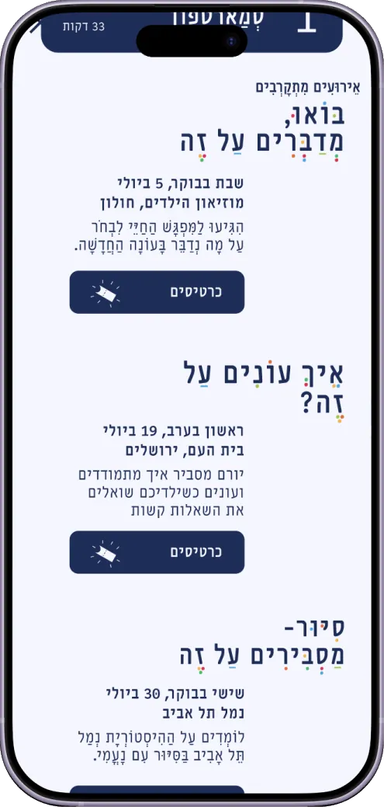
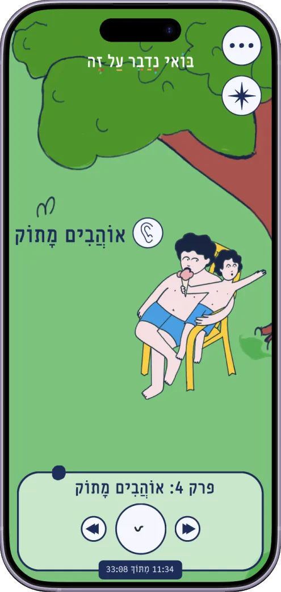
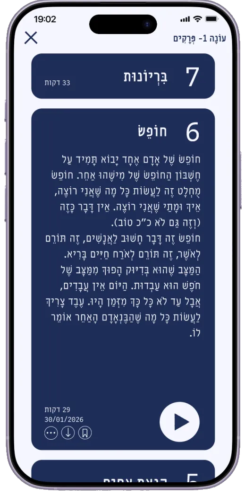
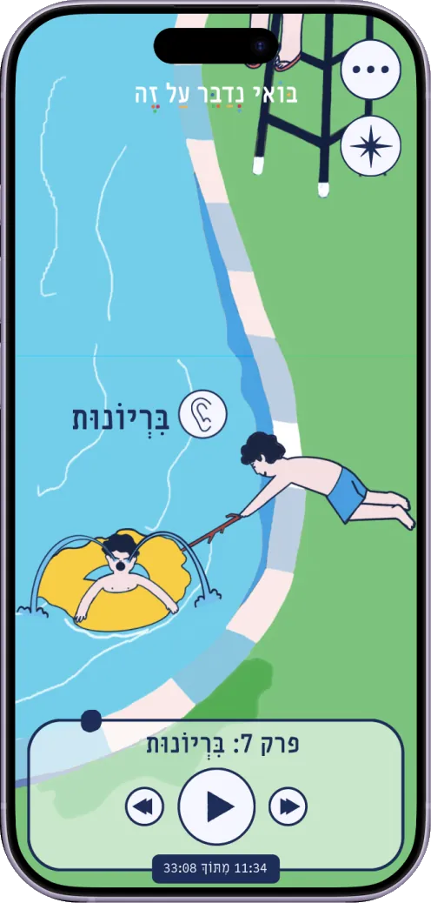
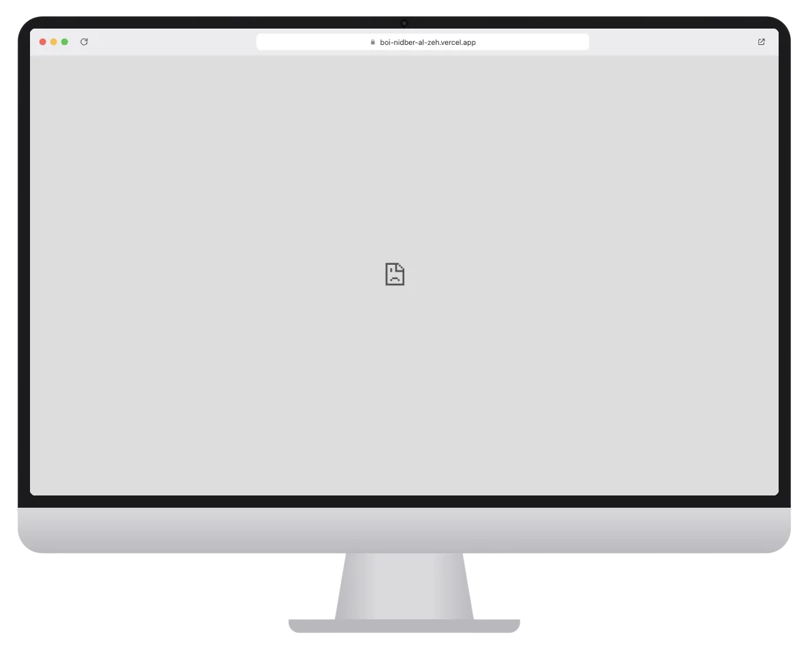

![יורם: יורם יובל הוא פסיכיאטר, פסיכואנליטיקאי וחוקר מוח, מהקולות הבולטים בישראל בתחום הנפש והרגש. הוא מרצה בפקולטה לרפואה באוניברסיטה העברית בירושלים וחוקר את הקשר בין המוח, רגשות והתנהגות אנושית - במיוחד בתחומי האהבה והקשרים בין אנשים. נעמי: נעמי בת 10, בתו של יורם יובל. ילדה סקרנית, דעתנית ומלאת דמיון, עם יכולת נדירה לשאול שאלות פשוטות שנוגעות בדיוק בדברים הכי מורכבים. מתוך התבוננות חדה בבני אדם ובעולם שסביבה, היא מעלה מחשבות מפתיעות על טוב ורע, פחד, אהבה, חברות ותקווה - ועל הפער בין מה שאנשים אומרים למה שהם באמת מרגישים.](images/lets-talk-hosts.webp)








lets talk about it
web&app design
illustration
student project
2026

A digital experience for a podcast. a father and his 10-year-old daughter explore life’s big questions - from the seemingly naive to the deeply complex topics.
The website and app turn each season of episodes into an interactive world, allowing users to wander between playful scenarios and discover different perspectives connected to the season’s theme.
![יורם: יורם יובל הוא פסיכיאטר, פסיכואנליטיקאי וחוקר מוח, מהקולות הבולטים בישראל בתחום הנפש והרגש. הוא מרצה בפקולטה לרפואה באוניברסיטה העברית בירושלים וחוקר את הקשר בין המוח, רגשות והתנהגות אנושית - במיוחד בתחומי האהבה והקשרים בין אנשים. נעמי: נעמי בת 10, בתו של יורם יובל. ילדה סקרנית, דעתנית ומלאת דמיון, עם יכולת נדירה לשאול שאלות פשוטות שנוגעות בדיוק בדברים הכי מורכבים. מתוך התבוננות חדה בבני אדם ובעולם שסביבה, היא מעלה מחשבות מפתיעות על טוב ורע, פחד, אהבה, חברות ותקווה - ועל הפער בין מה שאנשים אומרים למה שהם באמת מרגישים.](images/lets-talk-phone-hosts.webp)
I designed this website and app end-to-end alongside hillel buchris. I took lead on the development of the visual language, building the final app prototype, assisted with the illustration and vibe coding.